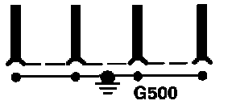

Ground - "G"
Ground:

This symbol means the end of the wire is attached (grounded) to the car frame or to a metal part connected to the frame. Each wire ground (G) is numbered for reference.
Ground:
This ground symbol (dot and 3 lines) overlapping the component means the housing of the component is grounded to the car frame or to a metal part connected to the frame.
Ground:

This symbol represents the bus inside a ground connector. The dots represent tabs on the bus that the wire terminals connect to.
The ground symbol (large dot) is the connection between the bus and metal (grounded) part of the car.